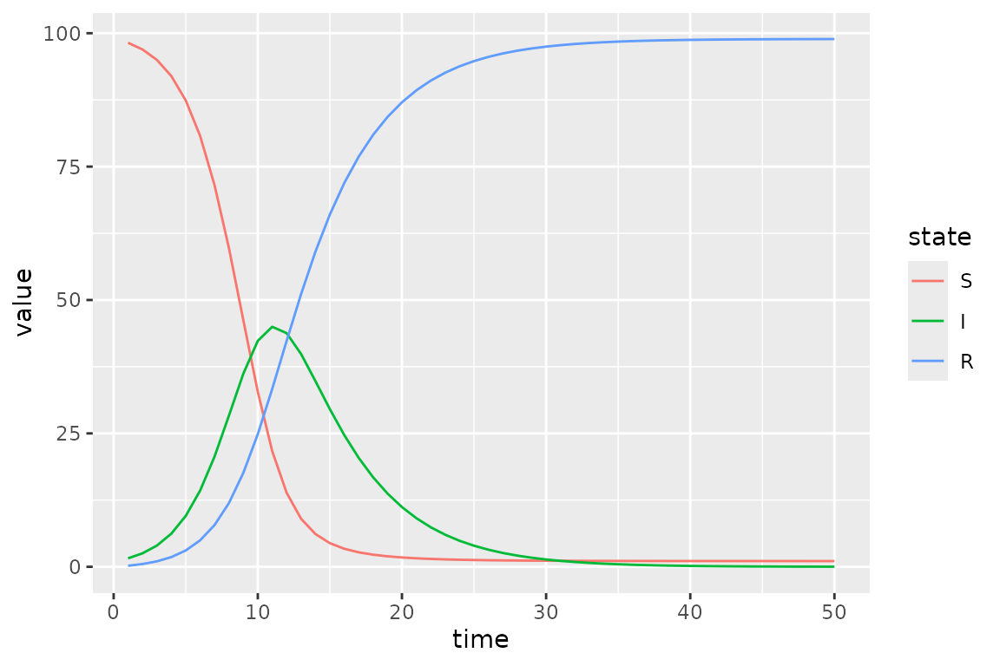
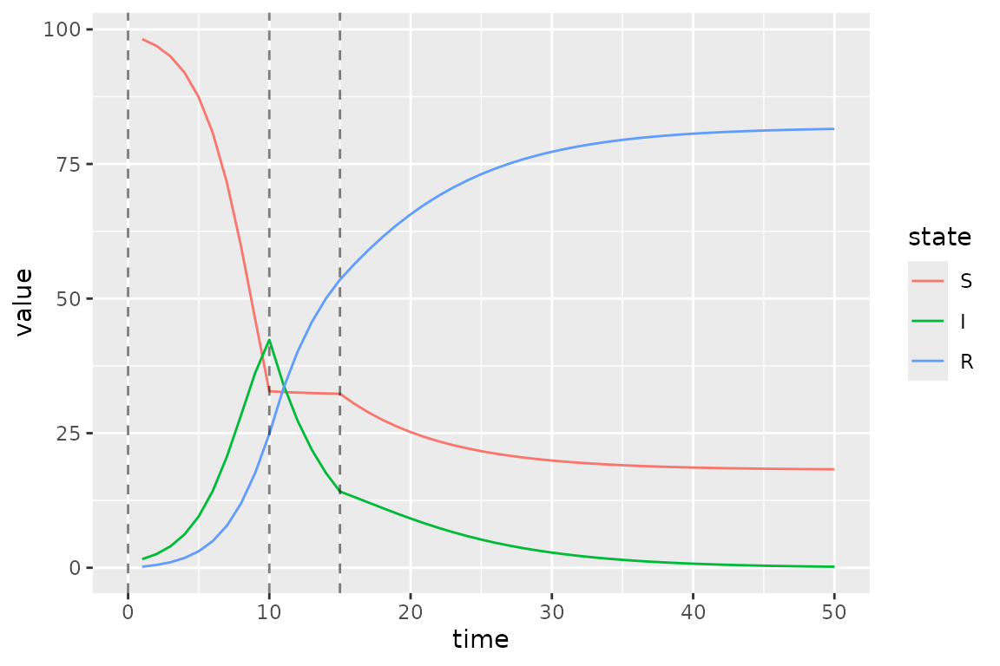
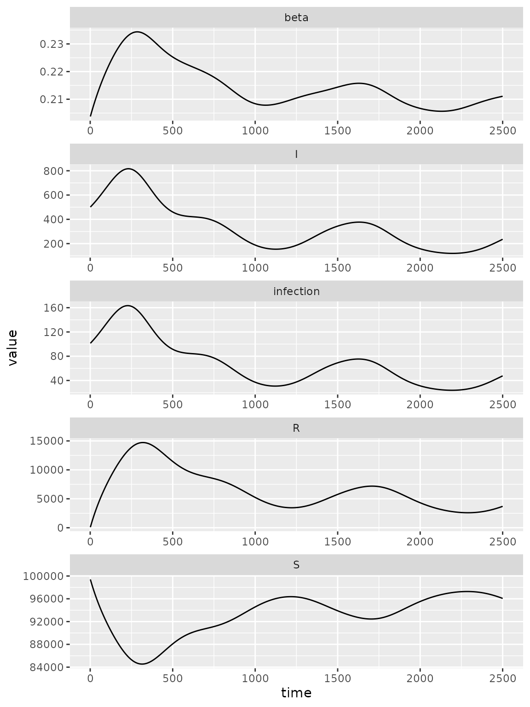
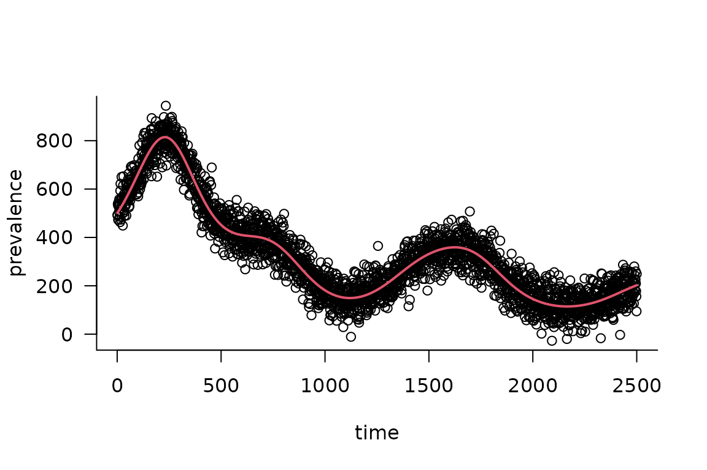

Advanced Specification of Time-Varying Parameters
Source:vignettes/time_varying_parameters_advanced.Rmd
time_varying_parameters_advanced.RmdBaseline SIR Model
Here we modify an SIR model so that transmission rate is time-varying.
state_labels = c("S", "I", "R")
simulator = ("starter_models"
|> mp_tmb_library("sir", package = "macpan2")
|> mp_simulator(time_steps = 50
, outputs = state_labels
, default = list(beta = 0.8, gamma = 0.2)
)
)
(simulator
|> mp_trajectory()
|> mutate(state = factor(matrix, state_labels))
|> ggplot()
+ geom_line(aes(time, value, colour = state))
)
Piecewise Time Variation
We now change the value of the transmission rate, beta,
at the beginning of time-step 10 and 15. In the first step we add to the
simulator a vector containing these change-points.
simulator$add$matrices(beta_changepoints = c(0, 10, 15))Next we add the values to which beta changes at these
time-steps.
simulator$add$matrices(beta_values = c(0.8, 0.01, 0.4))We also need a variable to track the current value of
beta. This beta_pointer starts at time-step
equal to 0, and it will be incremented throughout the simulation.
simulator$add$matrices(beta_pointer = 0)We increment beta_pointer using the time_group
function that returns either beta_pointer or
beta_pointer + 1 depending on whether or not the current
time-step is at a change-point in beta_changepoints.
simulator$insert$expressions(
beta_pointer ~ time_group(beta_pointer, beta_changepoints),
.phase = "during"
)We update beta at every iteration of the simulation loop
using this beta_pointer.
simulator$insert$expressions(
beta ~ beta_values[beta_pointer],
.phase = "during"
)Now we plot the updated simulations using these change-points, which we highlight with vertical lines.
s = mp_trajectory(simulator)
cp = simulator$get$initial("beta_changepoints")
(s
%>% mutate(state = factor(matrix, state_labels))
%>% ggplot()
+ geom_line(aes(time, value, colour = state))
+ geom_vline(
aes(xintercept = x),
linetype = "dashed",
alpha = 0.5,
data = data.frame(x = cp)
)
)
The clear kinks at times 10 and 15 are due the drop and then lift of the transmission rate at these times.
Calibrating Time Variation Parameters
First we simulate data to fit our model to, to see if we can recover the time-varying parameters.
Then we add a few matrices to the model for keeping tracking of information used in model fitting.
simulator$update$matrices(
## observed data
I_obs = I_observed,
## simulated trajectory to compare with data
I_sim = empty_matrix,
## location of I in the state vector
## (the `-1L` bit is to get 0-based indices instead of 1-based)
I_index = match("I", state_labels) - 1L,
## matrix to contain the log likelihood values at
## each time step
log_lik = empty_matrix,
## need to save the simulation history of each of these matrices
.mats_to_save = c("I_sim", "log_lik")
)Now we need some new expressions. The first expression pulls out the I state from the state vector.
simulator$insert$expressions(
I_sim ~ I,
.phase = "during"
)The second expression computes a vector of Poisson log-likelihood values – one for each time step.
simulator$insert$expressions(
log_lik ~ dpois(I_obs, clamp(rbind_time(I_sim))),
.phase = "after"
)
simulator$replace$obj_fn(~ -sum(log_lik))Next we declare the beta values as parameters to be optimized on the log scale. The clearest way to do this is to form a data frame with one row for each parameter to be fitted.
default_beta = mean(simulator$get$initial("beta_values"))
params_to_fit = data.frame(
mat = "log_beta_values"
, row = 0:2
, default = log(default_beta)
)
print(params_to_fit)
#> mat row default
#> 1 log_beta_values 0 -0.9079919
#> 2 log_beta_values 1 -0.9079919
#> 3 log_beta_values 2 -0.9079919There are a couple potentially confusing aspects to this data frame.
First, we want to fit the beta values on the log scale, and
we indicate this by prepending log_ in front of the name of
the beta_values matrix that is in the model. We will more
explicitly add the log_beta_values matrix to the model in
the next code chunk. Second, the word row corresponds to an
index for the change points. In particular, row = 0
corresponds to the initial beta, row = 1 to
the first change point and row = 2 to the second. This is
because all quantities passed to macpan2 engines are
matrices, and so in this case different rows of this
log_beta_values matrix (actually column vector) correspond
to different change points. If we were dealing with matrices with more
than one column we would need to include a col column in
this data frame to indicate the matrix columns of the matrix entries
that correspond to parameters to be fitted.
Now we log transform the beta_values matrix entries and
declare them as parameters.
simulator$add$transformations(Log("beta_values"))
simulator$replace$params_frame(params_to_fit)Finally we fit the model back to the simulation data.
simulator$optimize$nlminb()
#> outer mgc: 736.1414
#> outer mgc: 112.6655
#> outer mgc: 71.38648
#> outer mgc: 13.6616
#> outer mgc: 12.58091
#> outer mgc: 3.638083
#> outer mgc: 1.399513
#> outer mgc: 1.609453
#> outer mgc: 1.140347
#> outer mgc: 0.5870909
#> outer mgc: 0.2527136
#> outer mgc: 0.09938628
#> outer mgc: 0.03753935
#> outer mgc: 0.01394885
#> outer mgc: 0.005150654
#> outer mgc: 0.001897432
#> outer mgc: 0.0006983805
#> outer mgc: 0.0002569678
#> outer mgc: 9.453969e-05
#> outer mgc: 3.478009e-05
#> outer mgc: 1.2795e-05
#> outer mgc: 4.707033e-06
#> outer mgc: 1.731622e-06
#> outer mgc: 6.370289e-07
#> outer mgc: 2.343497e-07
#> outer mgc: 8.62125e-08
#> outer mgc: 3.171603e-08
#> $par
#> params params params
#> -0.1710158 -22.8268369 -0.8291142
#>
#> $objective
#> [1] 99.74231
#>
#> $convergence
#> [1] 0
#>
#> $iterations
#> [1] 26
#>
#> $evaluations
#> function gradient
#> 28 27
#>
#> $message
#> [1] "relative convergence (4)"We can see that the optimizer converges
(i.e. $convergence = 0) in 26 iterations.
On the log scale we see that the optimizer finds different values
(current) than it started at (default).
simulator$current$params_frame()
#> par_id mat row col default current
#> 1 0 log_beta_values 0 0 -0.9079919 -0.1710158
#> 2 1 log_beta_values 1 0 -0.9079919 -22.8268369
#> 3 2 log_beta_values 2 0 -0.9079919 -0.8291142More importantly the beta values on the untransformed scale recover reasonable values that are qualitatively consistent with the values used in the simulations.
data.frame(
fitted = formatC(
exp(simulator$current$params_frame()$current),
format = "e", digits = 2
),
true = simulator$get$initial("beta_values")
)
#> fitted true
#> 1 8.43e-01 0.80
#> 2 1.22e-10 0.01
#> 3 4.36e-01 0.40Note however that the second fitted beta value is much smaller than the true value, which is potentially interesting.
Radial Basis Functions for Flexible Time Variation (In-Progress)
This section uses radial basis functions (RBFs) to generate models with a flexible functional form for smooth changes in the transmission rate.
Before we can add the fancy radial basis for the transmission rate, we need a base model. We use an SIR model that has been modified to include waning.
sir = mp_tmb_library("starter_models"
, "sir_waning"
, package = "macpan2"
)The macpan2::rbf function can be used to produce a
matrix giving the values of each basis function (each column) at each
time step (each row). Using this matrix,
,
and a weights vector,
,
we can get a flexible output vector,
,
with a shape that can be modified by changing the weights vector.
The following code illustrates this approach.
set.seed(1L)
d = 20
n = 2500
X = rbf(n, d)
b = rnorm(d, sd = 0.01)
par(mfrow = c(3, 1)
, mar = c(0.5, 4, 1, 1) + 0.1
)
matplot(X
, type = "l", lty = 1, col = 1
, ylab = "basis functions"
, axes = FALSE
)
axis(side = 2)
box()
barplot(b
, xlab = ""
, ylab = "weights"
)
par(mar = c(5, 4, 1, 1) + 0.1)
plot(X %*% b
, type = "l"
, xlab = "time"
, ylab = "output"
)
Here d is the dimension of the basis, or number of
functions, and n is the number of time steps. By
multiplying the uniform basis matrix (top panel) by a set of weights
(middle panel), we obtain a non-uniform curve (bottom panel). Note how
the peaks (troughs) in the output are associated with large positive
(negative) weights.
Now we want to transform the output of the (matrix) product of the RBF matrix and the weights vector into a time-series for the transmission rate, . Although we could just use the output vector as the time series, it is more convenient to transform it so that the values yield more interesting dynamics in an SIR model. In particular, our model for as a function of time, , is
Here we have the recovery rate, , and number of susceptibles, , at time, , the total population, , and the th row of , . To better understand the rationale for this equation note that if every element of is set to zero, we have the following condition.
This condition assures that the number of infected individuals remains constant at time, . This means that positive values of will tend to generate outbreaks and negative values will tend to reduce transmission.
fixme: I (BMB) understand why you’re setting the model up this way, but it’s an odd/non-standard setup - may confuse people who are already familiar with epidemic models (it confused me initially).
Here is a simulation model with a radial basis for exogenous transmission rate dynamics.
set.seed(1L)
simulator = mp_simulator(sir
, time_steps = n
, outputs = c("S", "I", "R", "infection", "beta")
, default = list(
N = 100000, I = 500, R = 0
, beta = 1, gamma = 0.2, phi = 0.01
, X = rbf(n, d)
, b = rnorm(d, sd = 0.01)
)
)
simulator$insert$expressions(
eta ~ gamma * exp(X %*% b)
, .phase = "before"
, .at = Inf
)
simulator$insert$expressions(
beta ~ eta[time_step(1)] / clamp(S/N, 1/100)
, .phase = "during"
, .at = 1
)
simulator$add$matrices(
eta = empty_matrix
)
simulator$replace$params(
default = rnorm(d, sd = 0.01)
, mat = rep("b", d)
, row = seq_len(d) - 1L
)
print(simulator)
#> ---------------------
#> Before the simulation loop (t = 0):
#> ---------------------
#> 1: S ~ N - I - R
#> 2: eta ~ gamma * exp(X %*% b)
#>
#> ---------------------
#> At every iteration of the simulation loop (t = 1 to 2500):
#> ---------------------
#> 1: beta ~ eta[time_step(1)]/clamp(S/N, 1/100)
#> 2: infection ~ S * (I * beta/N)
#> 3: recovery ~ I * (gamma)
#> 4: waning_immunity ~ R * (phi)
#> 5: S ~ S - infection + waning_immunity
#> 6: I ~ I + infection - recovery
#> 7: R ~ R + recovery - waning_immunity
(simulator
|> mp_trajectory()
|> ggplot()
+ facet_wrap(~ matrix, ncol = 1, scales = 'free')
+ geom_line(aes(time, value))
)
Calibration
Now we’re going to calibrate this model to data. The main innovation
here is that we will use a built-in feature of TMB (on which
macpan2 is constructed), estimation of latent variables by
Laplace
approximation to fit the time series efficiently without overfitting
(see section 5.10 of Madsen and Thyregod
(2011), Kristensen et al. (2016),
or the TMB
documentation for more detail).
The next few steps will roughly follow the first example in the Calibration vignette: TODO: make sure to line this state up with the specific code in the calibration vignette.
1. Simulate from the model and add some noise:
obs_I <- (simulator
|> mp_trajectory()
|> filter(matrix == "I")
|> mutate(across(value, ~ rnorm(n(), ., sd = 50)))
|> pull(value)
)
plot(obs_I, xlab = "time", ylab = "prevalence")2. Add calibration information.
We start by adding standard boilerplate stuff to include the observed data and store/return the results.
## copied from 'calibration/"hello world"' example
simulator$add$matrices(
I_obs = obs_I
, I_sim = empty_matrix
, log_lik = empty_matrix
, .mats_to_save = c("I_sim")
, .mats_to_return = c("I_sim")
)
simulator$insert$expressions(
I_sim ~ I
, .phase = "during"
, .at = Inf
)Now we start to deviate from the previous example: in addition to a
parameter (I_sd) for the standard deviation of the noise in
,
we also add a parameter (rbf_sd) for the variance of the
RBF coefficients, and penalize the likelihood using
and the likelihood is defined as: $$ \int {\cal L}(I_{\textrm{obs}}|\phi, {\mathbf b}', \sigma^2_I) \cdot {\cal L}({\mathbf b}'|\sigma^2_{\textrm{rbf}}) \, d{\mathbf b}. $$
The vector is a set of fixed-effect (unpenalized) parameters; in this case it is empty, but it could include (for example) time-constant recovery or immune-waning rates, or a baseline transmission rate (see note below). (The fixed-effect parameter is usually denoted as in statistical models, but we’ve already used that symbol for the transmission coefficient …)
Although this looks awful, (1) the high-dimensional integral over can be separated into a product of one-dimensional integrals and (2) the Laplace approximation gives us a quick, reasonable approximation to the one-dimensional integrals.
The rbf_sd parameter can be interpreted as a standard
deviation on a Gaussian random effect or as approximately
where
is a ridge penalty.
Continuing with the coding, we add the parameters and negative
log-likelihood to the model, making the negative log-likelihood a
sum of the two terms in the integral above: the NLL of the data
(-sum(dnorm(I_obs, ...))) and the likelihood of the RBF
parameters (-sum(dnorm(b, ...))): we fit both of the SD
parameters on the log scale.
simulator$add$matrices(
I_sd = 1
, rbf_sd = 1
)
simulator$insert$expressions(
log_lik ~
-sum(dnorm(I_obs, rbind_time(I_sim), I_sd)) +
-1*sum(dnorm(b, 0.0, rbf_sd)),
.phase = "after"
)
## initially forgot this: maybe we could warn when someone is missing this????
simulator$replace$obj_fn(~ log_lik)
simulator$add$transformations(Log("I_sd"))
simulator$add$transformations(Log("rbf_sd"))
## not sure if this is required?
params <- read.delim(sep = "|", header = TRUE,
strip.white = TRUE, ## important!
text = "
mat | default
log_I_sd | 0
log_rbf_sd | 1
")
simulator$replace$params_frame(params)Finally, we add the b vector as a set of random
parameters: this tells macpan2 to apply the Laplace
approximation to these parameters …
matrix_version = "1.6-5"
if (packageVersion("Matrix") >= matrix_version) {
rparams <- data.frame(
mat = "b",
row = 0:19,
col = 0,
default = 0)
simulator$replace$random_frame(rparams)
}Test the objective function:
if (packageVersion("Matrix") >= matrix_version) {
res <- simulator$ad_fun()$fn(c(1,1))
}
#> iter: 1 value: 5990932 mgc: 2060840114 ustep: 1
#> iter: 2 value: 1326996 mgc: 1334151123 ustep: 1
#> iter: 3 value: 539110 mgc: 359118190 ustep: 1
#> iter: 4 value: 461680.8 mgc: 72801334 ustep: 1
#> iter: 5 value: 458020.5 mgc: 9237470 ustep: 1
#> iter: 6 value: 457980.9 mgc: 606791.4 ustep: 1
#> iter: 7 value: 457980.9 mgc: 7710.865 ustep: 1
#> iter: 8 value: 457980.9 mgc: 2.557382 ustep: 1
#> iter: 9 value: 457980.9 mgc: 3.542136e-06 ustep: 1
#> mgc: 7.456678e-06#> [1] 458152.8
#> attr(,"logarithm")
#> [1] TRUEfixme: can’t get objective function to shut up.
Should have specified silent = TRUE when calling
MakeADFun() initially, now have tried assigning the value
in several different environments, without success …
This step normally produces lots of output (more output than a model
with random effects) because the Laplace approximation involves an
additional “inner” step where the b parameters are
optimized, even though we are only evaluating the objective for a single
set of fixed parameters (log_I_sd,
log_rbf_sd)
fixme: note to developers, if we cache results we
may need to call the $retape() function to restore internal
structure when retrieving …
if (packageVersion("Matrix") >= matrix_version) {
## testing: simulator$ad_fun()$fn()
fit <- simulator$optimize$nlminb()
}
if (packageVersion("Matrix") >= matrix_version) {
## simulator$print$matrix_dims()
## fixed effects only:
## look at parameters, but skip the random-effects parameters
## 'random' holds the indices of the parameters that are treated
## as random effects
(fixed_params <- with(simulator$ad_fun()$env,
last.par.best[-random]))
## ???
## RE only
(ran_params <- with(simulator$ad_fun()$env,
last.par.best[random]))
}
#> random random random random random
#> 0.0067465927 0.0116662707 -0.0036351043 -0.0151991877 0.0011407843
#> random random random random random
#> 0.0032611854 -0.0028961623 -0.0146685397 -0.0058109519 0.0073564031
#> random random random random random
#> 0.0097226258 0.0023723875 0.0007575157 0.0014767307 -0.0134880516
#> random random random random random
#> -0.0068763891 -0.0025158075 0.0027360906 0.0086700513 0.0033031980fixme: we need an incantation to extract the full
parameters (including RE parameters) in order to make sure
$report works properly? (In general, should caution about
mutability/make sure we use last.par.best internally …)
Extract parameters, run the simulator for the best-fit parameters, compare with data …
if (packageVersion("Matrix") >= matrix_version) {
pp <- simulator$ad_fun()$env$last.par.best ## FIXME: use this
est_I <- (simulator
|> mp_trajectory()
|> filter(matrix == "I")
|> pull(value)
)
par(las = 1, bty = "l")
plot(obs_I, xlab = "time", ylab = "prevalence")
lines(est_I, col = 2, lwd = 2)
}
fixme: there are a few artificialities about this example that could/should be relaxed
- the only fixed parameters are the standard deviations. Normally we
would also be estimating
gamma(possibly with a prior? do we have any examples, say in the calibration vignette, of adding priors?) - the RBF function is penalized to zero. In general, we should augment
the penalized RBF component (which determines the variation around the
mean) with an unpenalized intercept/baseline transmission parameter. So,
for example, the transmission rate should be computed as
b0 + exp(X %*% b), whereb0represents an unpenalized parameter that’s allowed to vary freely …
fixme: compare (1) unpenalized fit; (2) penalized fit without Laplace approximation …
fixme: discuss (somewhere) alternate bases for latent variables (random-walk, Gaussian process, …)